Genel Bilgiler
Bir projenin her yapım sürecinde, tasarım ve gerçeklik arasındaki ilişkinin kontrol edilmesi ihtiyacı ortaya çıkar. Bu imalat kontrolü, toprak işlerinin analizine dayanır ve eksen bazında nicel (ne kadar yapıldı) ve nitel (ne ölçüde orijinal projeye uygun yapıldı) olarak gerçekleştirilir.
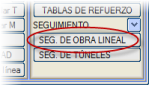DOĞRUSAL YAPI İMALAT TAKİBİ menüsüne, DÜŞEY GÜZERGAH menüsünden [İMALAT TAKİBİ] butonuna basılarak erişilir ve aşağıda açıklanan çalışma ortamı görüntülenir.
İş akışı, farklı yarma ve dolgulara ait bilgilerin depolanmasını ve işlenmesini içerir; bu bilgiler birbiriyle ilişkili durumlar halinde kaydedilir. Verilerin daha sonraki işlenmesi, farklı filtre türlerine göre gruplandırılabilir: zaman birimine göre, malzemeye göre, KM aralıklarına göre vb.
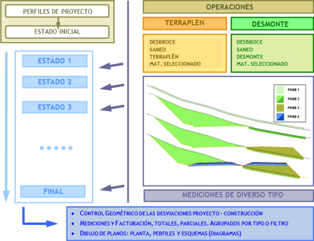
Bu bilgileri yönetebilmenin amacı, hakediş ve faturalandırma sırasında bu verilerin dahil edildiğinden ve dikkate alındığından emin olmaktır.
Temel Kavramlar. İnşaatın Yapım Aşamaları
Bu aracın açıklamasına başlamadan önce, kullanıcının aşağıdaki kavramları çok net bir şekilde anlaması gerekir:
Yapım Aşamaları
Dolgu Aşamaları
- Bitkisel Toprak Sıyırma:
Dolgu alanında, bitkisel toprak veya bitkisel toprak + uygun olmayan zemin katmanının kaldırılması, yani sağlam zemine ulaşmak için kazılması gereken kısmın kazılması işlemidir. Gerçek sağlam zemin seviyesinin projede dikkate alınanla aynı olmayacağı göz önünde bulundurulmalıdır.
- Zayıf Zemin Kazısı:
Önceki durumda olduğu gibi, gerçek zayıf zemin kazı hattı projede belirtilenden farklı olacaktır, bu nedenle gerçek kazıya ait saha verilerine sahip olmak önemlidir. Ancak, imalat takibine başlamak için bu bilgiye sahip değilsek, projede belirtilen ideal kazı hattına ulaşıldığını varsayarız.
- Zayıf Zemin Dolguları:
Kazı tamamlandıktan sonra, başka bir malzeme ile doldurulmalıdır. Bu dolgu, teorik sağlam zemin hattına göre ölçülür.
- Dolgu: Zayıf zemin kazısı tavanından seçme malzeme tabanına kadar olan malzeme serimidir.
Yarma Aşamaları:
- Bitkisel Toprak Sıyırma:
Yarma alanında, bitkisel toprak veya bitkisel toprak + uygun olmayan zemin katmanının kaldırılması, yani sağlam zemine ulaşmak için kazılması gereken kısmın kazılması işlemidir. Gerçek sağlam zemin seviyesinin projede dikkate alınanla aynı olmayacağı göz önünde bulundurulmalıdır.
- Yarma:
Arazi yüzeyinden, platform hattının üzerinde kaldığı durumlarda, alt kazı (over-excavation) tabanına kadar kaldırılacak malzemedir.
Yukarıdaki tüm aşamalar genellikle aynı anda yürütülür, ancak seçme malzeme imalatı bağımsız olarak yapılır. Dolayısıyla, bir imalat takibinin birkaç aşamadan oluştuğu özetlenebilir:
- Bitkisel toprak sıyırma, zayıf zemin kazısı, zayıf zemin dolguları, dolgu ve yarma.
- Seçme malzeme.
Seçme Malzeme
Seçme malzeme, dolgu tavanından veya kazı tabanından üstyapı katmanları tabanına (terasman) kadar olan seçilmiş malzeme dolgusudur. Üstyapı katmanları bu araçla KONTROL EDİLMEZ.
Oturma Yüzeyi
Bitkisel toprağı sıyrılmış ve zayıf zemini iyileştirilmiş arazi yüzeyidir ve dolgu için
oturma yüzeyi ve yarmalar için başlangıç yüzeyi olarak kabul edilir. Eğer mevcut değilse, ISTRAM®/ISPOL® bu yüzeyi proje yüzeyleriyle teorik olarak oluşturabilir. Enkesitlerde L59 tipi çizgi olarak gösterilir.
Takip Hattı, Saha Hattı, Saha Profili veya Veri Hattı
Saha verileri yüklendiğinde, enkesit dosyasında imalatın ilerlemesini gösteren L450 tipi bir kontrol hattı oluşturulur. Daha sonraki ilerlemelere ait diğer saha dosyaları eklendiğinde, imalatın yeni durumunu gösteren hat L450 tipi olur; önceki durumu gösteren hat L450'den L451'e geçer; bir önceki L451'den L452'ye geçer ve bu şekilde devam eder.
Takip Dosyaları. Geçmiş Kayıtlar
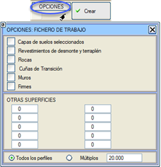Bir takibi başlatmak için ilk adım bir kontrol ve takip dosyası [Oluşturmak] olacaktır. Bu seçenekle, ISTRAM®/ISPOL® ISPOL#.per dosyasını alır ve bu dosyadan, arazi hattını ve # ekseni için kazı sınırı (cajeado) hattını içeren kontrol dosyası olan bir CONTL#.per dosyası oluşturur. Oluşturulan CONTL#.per dosyası ENKESİT EDİTÖRÜ
aracılığıyla düzenlenebilir (bu menüye açılır menüden de erişilebilir) ve ilgili geometri ve ölçümlerle bir dizi enkesit olarak çizdirilebilir.
Sahte Tünellerde Kontrol hattı Sahte Tünel Radyasından geçer.
Kontrol dosyası, bu nedenle, ISPOL#.per dosyasına çok benzer, ancak yalnızca arazi ve kazı sınırı hatlarını içerir. Yine de, [Oluştur] butonunun yanındaki [SEÇENEKLER] butonundan,
kontrol dosyası oluşturulurken aşağıdaki ek yüzeylerden hangilerinin de dikkate alınması gerektiğini belirtmek mümkündür:
- Farklı seçme malzeme katmanları.
- Yarma ve dolgu kaplama hatları.
- Kaya horizonları.
- Geçiş dolguları: Zayıf zemin kazısı tabanı
(L87), geçiş dolgusu tabanı (L193), dolgu altı dolgu tabanı (L770), geçiş malzemesi 0
(L198), geçiş malzemesi 1 (L180), geçiş malzemesi 2
(L181), drenaj tabakası (L89).
- Duvarlar (Duvar, Duvar Temeli, Duvar Temeli için Kazı ve Duvar Temeli Dolgusu).
- Üstyapı katmanlarını tanımlayan yüzeyler.
- Kullanıcı tarafından tanımlanan 10 adede kadar ek yüzey.
İletişim kutusunun alt kısmı, ISPOL#.per dosyasındaki tüm mevcut KM'lerde takip enkesitleri elde etmek veya belirli bir değerin katları olan enkesitlerle sınırlamak arasında karar vermenizi sağlar.
Kontrol dosyası oluşturulurken Oturma yüzeyi oluştur seçeneği aktif bırakılırsa, bitkisel toprak hattından başlayarak oturma yüzeyi de oluşturulur. Böylece takibi yapılmayan enkesitler bitkisel toprak sıyırma metrajı vermez.
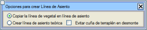Yanında bulunan [OP] butonu oturma yüzeyinin oluşturulması için aşağıdaki seçenekleri sunar:
- Bitkisel toprak hattını oturma yüzeyine kopyala, bu varsayılan seçenektir.
- Teorik oturma yüzeyi oluştur, zayıf zemin kazısı veya sağlam zemine göre. Bu durumda, yarma şev başında dolgu kamasından kaçınma imkanı da eklenir.
İmalattan gelen bilgiler, hem mutlak (başlangıca göre) hem de kısmi (iki aşama arasında) ölçümler yapmak için ardışık aşamalarda CONTL#.per dosyasına eklenir. Proje yüzeylerinde, CONTL#.per dosyasında görünenler ile ISPOL#.per dosyasındakiler arasında aşağıdaki farklar vardır:
- 68 numaralı yüzey, YARMA ve DOLGU aşamasının ulaşması gereken horizondur ve bu nedenle şimdi seçme malzemenin tabanından geçer.
- 15 numaralı yüzey şimdi seçme malzemenin tavanı, yani terasmandır.
- Yarma şev başı ve dolgu şev eteği, sağlam zemine karşı kapanır (bazı dolgu zayıf zemin kazıları hariç). Ayrı bir hat tipinde değilse kafa hendekleri dikkate alınacaktır. Bu şekilde kafa hendekleri kontrol hattına dahil edilir.
Bu sekmede gösterilen diğer butonlar şunlardır:
[Dosyadan]
|
Mevcut eksene karşılık gelmesi koşuluyla, ISPOL#.per dosyasından farklı bir enkesit dosyasından CONTL#.per kontrol dosyasını oluşturur.
|
[Tamamla]
|
Bu seçenek, mevcut CONTL#.per kontrol dosyasını, başlangıç ve bitiş KM'leri arasındaki verileri koruyarak, ISPOL#.per dosyasından gelen verilerle önden ve arkadan tamamlar. |
[Farklı Kaydet]
[Yükle]
|
İmalat takibi yapılandırmasını sırasıyla .ols uzantılı dosyalar aracılığıyla kaydetmeye ve geri yüklemeye olanak tanır.
|
Geçmiş Kayıtlar
Geçmiş kayıtlar, CTL#_i.per biçimindeki dosyalardır ve imalatın belirli bir andaki durumunu saklarlar. Aslında, CONTL#.per oluşturulduğunda otomatik olarak bir CTL#_0.per oluşturulur (# eksen numarasıdır).
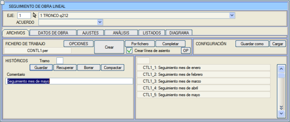
[Kaydet]
|
Bir geçmiş kayıt oluşturur, CONTL#.per dosyasının bir kopyasını CTL#_i.per dosyasına yapar; i = 0, 1, 2, 3, 4, 5,... (bulunan ilk boş numara). |
[Geri Yükle]
|
Bir CTL#_i.per dosyası seçilmesine olanak tanır ve bunu CONTL#.per üzerine kopyalar. |
[Sil]
|
Bir CTL#_i.per dosyasını silmeye olanak tanır.
|
[Sıkıştır]
|
Eğer arada bir kayıt silindiyse geçmiş kayıtları yeniden numaralandırır. |
Açıklama
|
Bir geçmiş kayıt kaydedilirken saklanan bir metindir (aynı isim ve .txt uzantılı dosyalarda).
Bir geçmiş kayıt geri yüklendiğinde, farklı geçmiş kayıtlara ait farklı açıklamalar grafik ekranda gösterilir ve ilgili açıklama geri yüklenir. Açıklama, geometri ve metraj raporları ile birlikte yazdırılır. |
Kesim
|
Aynı eksen için imalat takiplerini farklı seriler veya kesimler halinde gruplandırmaya olanak tanır. Varsayılan olarak, bir eksen 1 için sırasıyla CTL1_0, CTL1_1, CTL1_2,... (.per ve .txt) oluşturulacaktır. |
İmalat Verileri
Sürece
dahil olan dosyalar her türden olabilir, ancak yalnızca enkesit dosyaları veya bir enkesit oluşturabilen dosyalar (KM, kot bilgisi içeren metin dosyaları), yapım geometrisini ölçmek ve kontrol etmek için bilgi sağlar.
Diğer dosya türleri veya notlar, üretim yoluyla, takeometrik ölçümlerle, şerit metre ile elde edilen veya herhangi bir nedenle dönüştürülüp proje enkesit setine dahil edilemeyen ölçümlerin sürece dahil edilmesini sağlar.
İmalattan gelen veriler dört farklı şekilde yüklenebilir:
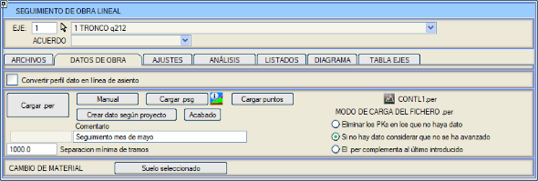
- .psg dosyaları aracılığıyla: .psg dosyaları,
belirli bir kontrol noktası (sadece yarma veya dolgu durumları için) veya iki kontrol noktası (yarısı yarma yarısı dolgu olan şevler, farklı seviyelerde ilerleyen iki dolgu vb. durumlar için) dikkate alınarak sahada alınan takip enkesitleridir. .psg dosyası yüklendikten sonra,
veriler yorumlanır ve kontrol dosyasına otomatik olarak yeni bir hat eklenir; bu hat, imalatın ardışık aşamalarındaki değişimi gösterir. .psg dosyaları aşağıdaki formata sahip ASCII dosyalardır:
| 160.000 |
NADA |
|
|
| 180.000 |
IGUAL |
|
|
200.000
|
IGUAL |
|
|
220.000
|
UNO
|
1026.000 |
|
| 240.000 |
DOS |
1014.300 |
1020.100 |
| 260.000 |
DOS |
1013.600 |
1020.100 |
| 280.000 |
DOS |
1013.550 |
1020.130 |
| 300.000 |
UNO |
1017.450 |
|
320.000
|
NADA |
|
|
| 340.000 |
LADOS
|
1015.000 |
1016.200 |
| 360.000 | CT |
|
| | 380.000 | CD |
|
|
Her KM için bir satır içerir ve şu kelimeleri barındırır:
NADA: Herhangi bir imalatın yapılmadığı durumu belirtir.
IGUAL: Önceki ölçümle aynı durumu belirtir.
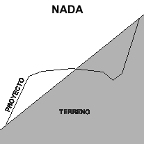
|
|
TODO: İmalatın tamamen bittiği, imalat hattının proje hattıyla tamamen çakıştığı durumu belirtir.
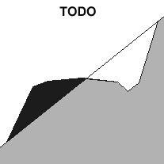
|
UNO:
Yapılan imalat seviyesini gösteren tek bir kot ile belirtilir. Bu kot, proje kotunun altında (yapım aşamasındaki dolgu) veya üstünde (yapım aşamasındaki yarma) olabilir.
DOS: Yarısı yarma yarısı dolgu olan enkesitlerde, dolgu ve yarma imalatının ilerleme hızını gösteren iki kot ile belirtilir.
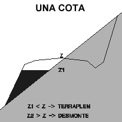
|
|
LADOS:
Biri sol taraf, diğeri sağ taraf için olmak üzere iki kot ile belirtilir. Örnek olarak, mevcut platformun her iki tarafından farklı kotlarda doldurulduğu bir platform genişletme durumu verilebilir.
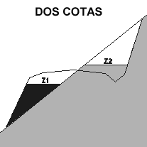
|
- .per dosyaları aracılığıyla: Saha verilerini girmenin ikinci ve en yaygın yöntemi,
her KM için mevcut imalat hattını temsil eden noktalara sahip geleneksel bir enkesit .per dosyasının işlenmesidir.
Veri yüklemede aşağıdaki seçenekler mevcuttur:
- Veri olmayan KM'leri sil: Saha
enkesit dosyası yüklendiğinde, CONTL#.per dosyasında yalnızca veri
bulunan KM'ler korunacaktır. Diğer enkesitleri silecektir.
Bu seçenek, sahadan gelen ilk verilerle kullanılabilir; bu verilerin yoğunluğu programla orijinal olarak hesaplanandan daha az olduğunda (örneğin, CONTL#.per dosyası her 10 m'de bir enkesit içerirken, sahada her 20 m'de bir ölçüm alınacaksa).
- Veri yoksa ilerleme olmadığını varsay:
Kontrol dosyasındaki bir KM için saha dosyasında veri olmadığında, aşağıdaki gibi hareket edilir:
- Kontrol dosyasında henüz bir takip verisi yoksa, enkesit olduğu gibi korunur.
- Kontrol dosyasında önceki bir takip verisi varsa, bu yüzey tekrarlanır, böylece başlangıca göre metraj korunur ve kısmi metraj sıfır olur.
Yani, bu durumda, yeni bir veri alınmayan enkesitlerde imalatın önceki ölçümden bu yana o noktada hareket etmediği varsayılır.
Her ayın ilerleme verileri birkaç saha dosyası halinde getirildiğinde, bu seçenek ayın ilk dosyası yüklendiğinde kullanılmalıdır.
- .per dosyası son girileni tamamlar: Kontrol
dosyasındaki bir KM'de saha verisi olmadığında, olduğu gibi korunur; saha verisi varsa aşağıdaki gibi hareket edilir:
- Kontrol dosyasında hiç takip verisi yoksa, saha verisi eklenir.
- Kontrol dosyasında zaten takip verileri varsa, saha verisi son girilen takibin yerini alır.
Bu seçenek, tek bir takip verisini tamamlamak için veriler kesimler halinde veya farklı dosyalarda alındığında kullanışlıdır.
Her ayın ilerleme verileri birkaç saha dosyası halinde getirildiğinde, bu seçenek ikinci dosyadan itibaren yüklenirken kullanılmalıdır.
- Manuel: Bir takip dosyasına .psg karşılık gelen verilerin her KM için aşağıdaki seçeneklerle girilmesine olanak tanır:
- 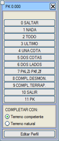 ATLA: Mevcut enkesiti yok sayar.
- YOK (NADA): İmalat henüz başlamamış.
- TAMAMI (TODO): O KM için imalat tamamen bitmiş.
- SON (ÚLTIMO): Son ölçümden bu yana değişiklik yok.
- BİR KOT: O kota kadar yapılan imalat için, bir yarma (proje kotundan daha yüksek kot) veya dolgu (proje kotundan daha düşük kot) imalat durumu.
- İKİ KOT: Yarısı yarma yarısı dolgu olan enkesitler için, önceki kritere göre yarma ve dolgu imalat durumu.
- İKİ TARAF: Biri sol taraf, diğeri sağ taraf için olmak üzere iki kot ile. Örn., mevcut platformun her iki tarafından farklı kotlarda doldurulduğu bir platform genişletme durumu.
- KMi,Zi KMf,Zf: Mevcut KM için bir kot ve başka bir KM için başka bir kot verilir. Aradaki KM'lerde kot enterpole edilir.
- YARMA TAMAMLA: Yarma kazısının tamamlandığını varsayar. Eğer zaten bir takip hattı varsa, o hattın geri kalanını kazı sınırı hattı (L68) ile tamamlar.
- DOLGU TAMAMLA: Dolgunun tamamlandığını varsayar. Eğer zaten bir takip hattı varsa, o hattın geri kalanını kazı sınırı hattı ile tamamlar.
- ÇIKIŞ: Mevcut KM'den sona kadar değişiklik yok.
- KM: Belirli bir KM'ye gitmeye olanak tanır.
Mevcut KM için seçeneği belirlemeden önce, program [Enkesiti Düzenle] butonuna basarak enkesiti düzenleme ve analiz etme imkanı sunar.
Ayrıca enkesitin şununla tamamlanıp tamamlanmayacağı seçilmelidir:
- Sağlam Zemin: ISTRAM®/ISPOL® zemini, bitkisel toprağın zaten sıyrıldığını varsayarak sağlam zemin olarak alır.
- Doğal Zemin: Programa henüz bitkisel toprağın sıyrılmadığı belirtilir.
- Noktaları Yükle:
Güzergah boyunca alınmış noktaları içeren .xyz, .top veya .toc formatındaki bir nokta dosyasından saha verilerini dahil eder.
Her nokta, alındığı KM için bir kot içerir. Noktaların Kontrol dosyasındaki KM'lerde alınmış olması gerekmez, çünkü bu enkesitler için kot enterpole edilir, hatta uçlardan belirli bir mesafeye kadar ekstrapolasyon bile yapılabilir.
İmalat verilerinde dikkate alınması gereken diğer seçenekler şunlardır:
- Projeye göre veri oluştur. Etkileşimli düzenlemedeki gibi çalışır, ancak
bir KM aralığını değiştirir. Eğer duvar temeli dolgu hattı varsa, bu hat ile tamamlanır.
- Bitir.
Etkileşimli düzenlemedeki gibi çalışır, ancak bir KM aralığını değiştirir. Eğer duvar temeli dolgu hattı varsa, bu hat ile tamamlanır.
- Kesimlerin minimum ayrımı: Eğer ardışık iki enkesit arasındaki KM mesafesi belirtilen değerden büyükse, farklı bir kesim olarak kabul edilir ve her iki enkesit arasında kısmi metraj sıfır yapılır.
- Veri profilini oturma yüzeyine dönüştür: Bu seçenek etkinleştirilirse,
her enkesite girilen ilk saha verisi oturma yüzeyi olarak alınacaktır. Bu şekilde şu şekilde değerlendirilir:
- Yarmada bitkisel toprak sıyırma olarak: Arazi yüzeyi ile veri profili ve teorik platformun üzerinde kalan malzeme.
- Dolguda bitkisel toprak sıyırma olarak: Arazi yüzeyi ile sağlam zemin arasında, veri profilinin üzerinde ve teorik platformun altında kalan malzeme.
- Dolgu zayıf zemin kazısı olarak: Sağlam
zeminin altında, teorik platformun altında ve veri profilinin üzerinde kalan malzeme, oturma yüzeyi hattı mevcutsa.
- Yarma olarak: Sağlam zeminin altında, teorik platformun ve veri profilinin üzerinde kalan malzeme.
Eğer bu
seçenek etkinleştirilmezse, bitkisel toprak sıyırmanın zaten yapıldığı varsayılır.
Çoğu zaman bitkisel toprak sıyırma, dolgu ve yarmaya başlamadan önce tamamen yapılamaz; örneğin bir yamaçta, sıyırma ve doldurma aynı anda yapılabilir. Diğer durumlarda, arazi sıyrıldığında imalat profili alınmaz. Her iki durumda da bu seçenek kullanılamaz. Ancak program, bitkisel toprak sıyırmanın teorik sağlam zemin veya zayıf zemin kazı seviyesine kadar yapıldığını varsayarak oturma yüzeyi olmadan da çalışabilir. Ayrıca, Etkileşimli Düzenleme bölümünde daha sonra açıklanan ve ardışık saha verilerine göre oturma yüzeyini oluşturmaya veya güncellemeye olanak tanıyan diğer seçenekleri kullanmak da mümkündür.
Malzeme Değişimi
[Seçme Malzeme] seçeneğine tıklandığında, program
belirli iki KM arasında CONTL#.per dosyasını değiştirir ve yeni bir yüzey (L469: seçme malzeme tabanı) oluşturur.
Bu yüzey, son takip hattıyla çakışır; eğer takip hattı yoksa, sağlam zemin hattıyla çakışır. Daha sonraki bir takipte yeni bir imalat yüzeyi eklendiğinde, 469 hattının bulunduğu enkesitlerde, program yarma / dolgu aşamasının bittiğini ve eklenen malzemenin seçme malzeme olduğunu varsayar.
ISTRAM®/ISPOL® temel kütüphanesinde, seçme malzemede ardışık takipleri temsil eden L469, L470,
L471, L472, L473, L474 ve L475 hatları bulunur.
Ayarlamalar ve Veri Düzeltme
İmalatın
mevcut durumunun tutarlı bir profilini elde etmek için saha verilerini düzeltmeye veya tamamlamaya olanak tanıyan bir dizi fonksiyon içerir.
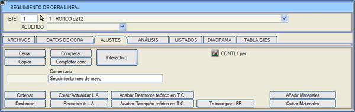
Sırala: CONTL#.per dosyasının yüzeylerini, enkesit editöründen kullanıcı tarafından müdahale edilmiş olmaları durumunda, mantıksal konumlarına göre yeniden sıralamaya olanak tanır.
Kapat: saha profilinin son noktasından teorik dolgu şev eteğine veya yarma şev başına kadar kapatır.
Kopyala: çalışma hattının (L450) bir kopyasını bir yedekleme kopyasına (L550) oluşturur.
O.Y. Oluştur/Güncelle: Etkileşimli
Düzenleme alt bölümünde açıklanmıştır ve bir kontrol dosyasının tamamı veya bir kısmı için aynı anda
ve dolayısıyla enkesit bazında yapmaya gerek kalmadan kullanılmasına olanak tanır.
O.Y. Yeniden Oluştur: Etkileşimli Düzenleme alt bölümünde açıklanmıştır,
ve bir kontrol dosyasının tamamı veya bir kısmı için aynı anda ve dolayısıyla enkesit bazında yapmaya gerek kalmadan kullanılmasına olanak tanır.
Bitkisel Toprak Sıyırma: ayrıca Etkileşimli
Düzenleme alt bölümünde açıklanmıştır ve bir kontrol dosyasının tamamı veya bir kısmı için aynı anda
ve dolayısıyla enkesit bazında yapmaya gerek kalmadan kullanılmasına olanak tanır.
Teorik Yarmayı Sağlam Zeminde Bitir: öngörülmeyen bitkisel toprak sıyırmaları yapıldığında yarma şev başındaki dolgu kamalarını önler.
Teorik Dolguyu Sağlam Zeminde Bitir: öngörülmeyen bitkisel toprak sıyırmaları yapıldığında dolguyu doğru bir şekilde ölçmek için kullanılır.
Sınır Çizgisine Göre Kırp: Takip
yüzeyini (L450) eksenin sınır çizgilerine (.lfr proje, sanat yapıları, eksenler arası duvar...) göre kırpar.
Malzeme Ekle: CONTLx.per dosyasına
her bir kısmi dolgu eklemesi için kapalı bir yüzey ekler.
Oturma yüzeyini ve mevcut tüm takipleri (L450, L451,
L452...) kullanır ve en eskiden en yeniye doğru L2600 (MALZEME 0), L2601 (MALZEME 1)... ve bu şekilde 100 malzemeye kadar yüzeyler atar.
Bu seçenek kullanılırsa ve CONTLx.per dosyasında önceden malzeme varsa, sadece son takip için (450/451) yeni bir malzeme oluşturulur.
[Tamamla] seçeneği takip dosyasında mevcut olan tüm enkesitler üzerinde çalışır. Bu işlem [Etkileşimli] menüsü içinden yürütülürse, belirli bir KM üzerinde etkili olur. Aşağıdaki seçenekleri sunar:
- 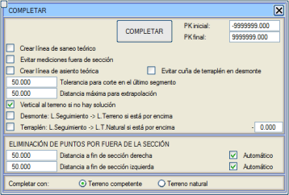Teorik zayıf zemin kazı hattı oluştur: takip hattını ve sağlam zemini kullanarak teorik bir zayıf zemin kazı hattı oluşturur. Bu, kesit dışında yarma metrajlarının görünmesini engeller.
- Yarmada dolgu kamasından kaçın:
Bu seçenek etkinleştirildiğinde, yarma şev başında ve projelendirilen şevin bitkisel toprak örtüsünü kestiği yerde, teorik oturma yüzeyi sağlam zeminden ayrılarak bu şev boyunca yüzeye kadar yükselir.
- Son segmentte kesim için tolerans: veri hattı
L450'nin son noktası teorik kesitin dışına çıkarsa, bu hattın proje hattı L68 ile devam edilerek (ayrıca arazi hattı veya önceki takip hattı ile de denenir) kesilebileceği marj.
- Ekstrapolasyon için maksimum mesafe: saha hattı
L450'nin proje hattı L68'i kesene kadar uzatılabileceği ve bu hattan devam edebileceği tolerans (ayrıca arazi hattı veya önceki takip hattı ile de denenir).
- Çözüm yoksa araziye dikey: Önceki seçeneklerle takip hattı tamamlanamazsa,
son noktasından araziye bir dikey çizilir. Eğer kesit içindeyse, arazi boyunca kesitin sonuna kadar devam ettirilir.
- Yarma: T. Hattı-> Arazi Hattı eğer üzerindeyse: Sadece yarma durumunda, eğer takip hattı arazinin (bitkisel/sağlam zemin) üzerindeyse ve bu seçenek etkinse, takip hattı arazi üzerine taşınır.
- Dolgu: T. Hattı-> Doğal Arazi Hattı eğer üzerindeyse: Eğer takip hattı
doğal arazinin üzerindeyse, onunla çakıştırılır. Eğer bir derinlik eklenirse, program, bu horizonun üzerinde kalan takip hattı kesimlerini, doğal araziden o derinlikte olan bir hatta taşır.
- Kesit dışındaki noktaların silinmesi: Sağa ve sola iki farklı mesafe verilebilir. Bu değerler aşağıdaki gibi çalışır:
- Eğer takip profili arazi profilinden daha uzunsa, arazi ile aynı uzunlukta kırpılır.
- Eğer şevleri kesiyorsa, şevin dışından verilen mesafede kırpılır.
- Eğer şevleri kesmiyorsa, dolgu şev eteğinden veya yarma şev başından ölçülen mesafede kırpılır.
Bu düzeltmeyi uyguladıktan sonra, takip hattı son segmentle kesme denemeleri veya ekstrapolasyon nedeniyle daha
uzun veya daha kısa kalabilir.
Eğer Otomatik seçeneği etkinleştirilirse, program dış mesafeye göre noktaları sildikten sonra kalan takip hattı parçasını analiz eder ve kesit dışında kalan parçanın araziyi kesip kesmediğini inceler. Kesme durumunda, takip hattını en dıştaki kesim noktasında kırpar.
- Tamamlama Yöntemi: Tam bir dosya veya bir KM aralığı için, sağlam zemin ile mi yoksa doğal zemin ile mi tamamlanacağını tanımlamaya olanak tanır.
Etkileşimli Düzenleme
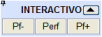Buradan
saha profilini etkileşimli olarak ayarlamak mümkündür. Sağda,
sırasıyla önceki profile, herhangi bir profile veya sonraki profile gitmeye olanak tanıyan üç gezinme butonu gösterilir. Enkesit dosyasının sonuna ulaşmak için, [Enkesit] butonuna basıp sonuncudan daha büyük bir KM belirtmek gerekir.
 butonu, bu menüde yapılan çoğu ayarlamayı geri almaya olanak tanır. Son enkesitin etkileşimli düzenlemesi bittiğinde bir uyarı penceresi gösterilir.
butonu, bu menüde yapılan çoğu ayarlamayı geri almaya olanak tanır. Son enkesitin etkileşimli düzenlemesi bittiğinde bir uyarı penceresi gösterilir.
Her enkesit için ve her iki tarafın içi ve dışı için aşağıdaki olanaklar sunulur:
|
Orijinal
|
Saha profilini değiştirildikten sonra orijinal durumuna döndürür. |
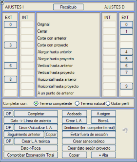
|
|
Kapat
|
Profili dolgu şev eteği veya yarma şev başı ile kapatır. |
|
Saha profilinin son segmentinin arazi veya önceki durum ile kesişimi |
Arazi veya önceki durum ile dolgu şev eteğine veya yarma şev başına kadar tamamlanır. |
|
Saha profilinin son segmentinin proje profili ile kesişimi |
Sona kadar proje profili ile tamamlanır. |
|
Saha profilini araziye veya önceki duruma kadar uzat |
Arazi veya önceki durum ile dolgu şev eteğine veya yarma şev başına kadar tamamlanır. |
|
Saha profilini proje profiline kadar uzat |
Sona
kadar proje profili ile tamamlanır. Eğer saha hattı proje hattından daha uzunsa, proje hattının tanım aralığına göre kesme imkanı sunar.
|
|
Öncekine kadar dikey |
Arazi veya önceki durum ile dolgu şev eteğine veya yarma şev başına kadar tamamlanır. |
|
Projeye kadar dikey |
Sona kadar proje profili ile tamamlanır. |
|
Öncekine kadar yatay |
Arazi veya önceki durum ile dolgu şev eteğine veya yarma şev başına kadar tamamlanır. |
|
Projeye kadar yatay |
Sona kadar proje profili ile tamamlanır. |
|
Önceki durumun bir noktasına git |
Bu
seçenek, saha hattını önceki durum hattının bir noktasına kadar uzatmaya ve bu hat üzerinden sona kadar kapatmaya olanak tanır. |
Arazi boyunca hattı devam ettiren seçenekler, Doğal zemin veya Sağlam zemin seçeneğinin seçili olup olmadığını dikkate alacaktır. Profili kaldır seçeneği ile
o enkesit kontrol dosyasından silinir. Bu seçenek, takibi kaydederken silinmemiş olsalar bile enkesitlerde işaretli kalır.
VERİLERİN ENKESİTİ (DIŞARIDAN VEYA İÇERİDEN) KAPSAMADIĞI DURUMLARDA DÜZELTME
Aşağıdaki durumlar meydana geldiğinde:
- Bir yarım enkesit eksik.
- Yarım enkesitler eksene ulaşmıyor.
- Sadece bir yarım enkesit var ve eksene ulaşmıyor.
Menüde, her yarım enkesitin dış ve iç tarafı için olası düzeltmeler görünür, şunlar dikkate alınarak:
- Eğer
bir yarım enkesit eksikse, önce diğer tarafın iç kısmı düzeltilir
ve sonra yeniden hesaplama yapıldığında eksik taraf için olası çözümler görünür.
- Kapat seçeneği,
diğer taraf eksik olduğunda içten kapatma eğiliminde, eksik tarafın dolgu şev eteği ile kapanmaya çalışır; diğer taraf mevcutsa, diğer tarafın ilk iç noktası ile kapanmaya çalışır.
- Kapat, ... kadar uzat ve ... kadar yatay
seçenekleri, iç taraftan uygulandığında, istenen yüzeyi kesemezlerse eksende kesilir ve daha sonra diğer taraftan tamamlanmalıdır.
[Yeniden Hesapla] seçeneği,
manuel olarak veya seçeneklerden biriyle değiştirilen mevcut durumu orijinal durum yapar ve diğer seçenekleri buna göre yeniden hesaplar.
ETKİLEŞİMLİ DÜZENLEME İÇİN DİĞER SEÇENEKLER
[Tamamla]
|
Tamamlama fonksiyonunu yürütür, ancak sadece mevcut enkesit üzerinde ve olasılıkları yeniden hesaplar. [OP] butonu, [Tamamla] seçeneğinin menüsünü açar. Eğer burada değiştirilirse, diğer herhangi bir enkesit için veya AYARLAMALAR sekmesindeki [Tamamla] seçeneği için kalıcı olurlar.
|
[Bitir]
|
Mevcut takip hattını (L450) projelendirilen imalat hattı (68) ile çakıştırarak değiştirir.
|
[Başlangıca]
|
Mevcut takip hattını (L450) orijinal arazi yüzeyinden (104 veya 66) geçirerek değiştirir.
|
| [Veri- > O.Yüzeyi] |
Eğer
zaten bir oturma yüzeyi (L59) varsa ve yeni takip verileri girilirse, son girilen hattın oturma yüzeyi olma olasılığı vardır (mevcut oturma yüzeyi
ile tamamlanır).
|
| [O.Y. Oluştur] |
Mevcut hatlardan herhangi birini temel alarak ve doğal zeminle tamamlayarak bir oturma yüzeyi oluşturur.
|
[HattıSil]
|
Profilden herhangi bir hattı silmeye olanak tanır.
|
| [O.Y. Oluştur/Güncelle] |
En az bir takip hattı (L450) olmasını gerektirir. Eğer önceden bir oturma yüzeyi yoksa, sadece bir takip hattı olabilir ve bu durumda oturma yüzeyi, önceki durumda doğal zeminle çakışıyormuş gibi güncellenir.
Bu seçenek, bitkisel toprak sıyırmanın ardışık dolgularla eş zamanlı olarak yapıldığı durumlarda en kullanışlı olanıdır ve bitkisel toprak sıyırma tamamlanana kadar her yeni takip hattı getirildiğinde yürütülmelidir.
Bu seçenek seçildiğinde, kısmi bitkisel toprak sıyırmalarını ölçmeye olanak tanıyan ara yüzeyler (L440) oluşturulur. Sadece bu seçenek her takip verisiyle yürütüldüğünde, kısmi bitkisel toprak sıyırma metrajı elde edilebilir, aksi takdirde sadece başlangıca göre bitkisel toprak sıyırma metrajı verilir.
Ayrıca, dolgu alanında oturma yüzeyi ile çakışan ve yarma alanında hepsinden daha alçakta olan yeni bir toplam kazı hattı oluşturulur ve güncellenir.
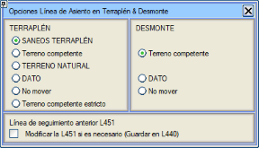Eğer [OP] butonuna
tıklanırsa, oturma yüzeyinin oluşturulması ve/veya güncellenmesi için bir seçenekler kutusu görünür; yarma alanı ile dolgu alanı ayırt edilir. Bu kutuda, aşağıdaki seçenekler arasından teorik oturma yüzeyi olarak hangi horizonun kullanılması gerektiği tanımlanır:
Dolguda:
- Zayıf zemin kazı hattı (yoksa sağlam zemin olacaktır).
- Sağlam zemin hattı.
- Doğal zemin hattı.
- Sahadan getirilen veri hattı.
- Hareket ettirme.
- Kesin sağlam zemin: yarma, dolgu veya kesit dışında olup olmadığını incelemez. Oturma yüzeyi, kazı yapıldıkça en fazla sağlam zemine kadar iner.
Ve yarmada:
- Sağlam zemin hattı.
- Sahadan getirilen veri hattı.
- Hareket ettirme.
Bu seçenek, AYARLAMALAR sekmesinde bulunan eşdeğer seçenek aracılığıyla bir kontrol dosyasının tamamı veya bir kısmı için aynı anda uygulanabilir.
Önceki takip hattı L451 için Gerekirse L451'i değiştir (440'a kaydeder) seçeneği mevcuttur.
Örnek:
Kazı yapan (kazı tabanına/sağlam zemine ulaşmayan) bir önceki L451 takibimiz ve L451'in üzerinde dolgu yapan bir mevcut L450 takibimiz var. Oturma Yüzeyini sağlam zemine güncellersek şunlar gereklidir:
- L451->L440 önceki durumu kopyala.
- L451'i O.Y.'ne kadar indirerek değiştir, bu şekilde metrajları alabiliriz.
- Kısmi bitkisel toprak sıyırma L440->L451.
- Kısmi dolgu L451->L450.
Aksi takdirde
L451->L450 kısmi metrajı gerçektekinden daha az bir dolguya sahip olacak ve kısmi bitkisel toprak sıyırma kaybolacaktır. Önceki sürümlerde L451 gerektiğinde her zaman değiştirilirdi, şimdi kullanıcının isteğine bırakılmıştır.
|
| [Bit. Top. Sıy. (gerçek sağlam zemin)] |
Bu fonksiyon, bitkisel toprak sıyırma durumu hakkında bilgi içerdiği varsayılan takip hattına (L450) göre sağlam zemin hattını (L66) değiştirir. Şu şekilde çalışır:
- Eğer bitkisel toprak hattı yoksa, sağlam zemin hattını (arazi yüzeyi) kopyalayarak oluşturur.
- Hiçbir noktada arazinin üzerinde olmaması gereken takip hattını düzeltir.
- Sağlam zemin hattını bu takip hattından (gerçek sağlam zemin) geçirir.
|
[Önceki Takip]
[Kopyala] |
Bu
seçenek, L450 ve L440 hatlarını silerek ve L451'i L450'ye, L452'yi L451'e vb. yeniden numaralandırarak önceki takip durumuna dönmeye olanak tanır. [Kopyala] seçeneği, önceki takibi korur ve mevcut takipte bir kopyasını oluşturarak kısmi metrajın sıfır olmasını sağlar.
|
| [Kesit Dışından Kaçın] |
Şu şekilde çalışır:
- Dolgu alanında, proje yüzeyinin üzerinde olanı proje yüzeyine taşır.
- Dolgu alanında, teorik zayıf zemin kazısının altında olanı zayıf zemin kazı yüzeyine taşır.
- Yarma alanında, proje yüzeyinin altında olanı proje yüzeyine taşır.
- Yarma alanında, arazinin üzerinde olanı arazi yüzeyine taşır.
- Proje yüzeyinin ötesinde olan her şey yanal olarak kırpılır.
|
| [Teorik O.Y. Oluştur] |
Zayıf zemin kazısının ve bitkisel toprak sıyırmanın projeye göre yapıldığını varsayar.
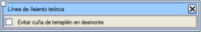Yanındaki [OP] butonuna tıklandığında, Yarmada dolgu kamasından kaçın seçeneği ile bir iletişim kutusu açılır. Bu seçenek etkinleştirilirse, yarma şev başında ve
projelendirilen şevin bitkisel toprak örtüsünü kestiği yerde, teorik
oturma yüzeyi sağlam zeminden ayrılarak bu şev boyunca yüzeye kadar yükselir.
|
| [Teorik Z.Z.K. Oluştur] |
Projede
öngörülmeyen bir zayıf zemin kazısı dolgu alanında yapıldığında,
takip hattını ve sağlam zemini kullanarak teorik bir zayıf zemin kazı hattı oluşturan bu seçeneği kullanmak uygundur. Bu, kesit dışında yarma metrajlarının görünmesini engeller. Yeni hat, zayıf zemin kazı hattını (L87) imalat sınırları arasında sağlam zemin hattı (L66) ile ve bu sınırların dışında arazi yüzeyi ile tamamlayarak oluşturulur.
|
| [Veri -> Kaya] |
Veri hattını kaya hattına dönüştürme imkanı sunar. Eğer kaya hattı zaten mevcutsa, bu hat yeni kayayı tamamlamak için kullanılır.
|
| [Projeye göre veri oluştur] |
Proje hattından bir veri hattı oluşturur. [Bitir] seçeneğine eşdeğerdir, ancak şu farkla: eğer veri hattı yoksa oluşturur, varsa önceki takip olarak yeniden adlandırır.
|
Toplam Kazıyı Kontrol Et
|
Önceki takip verileriyle kazıyı kontrol eder.
|
[Kopyala]
|
Bir yüzeyi diğerinin üzerine kopyalar. Eğer ikinci yüzey yoksa, oluşturur. Orijinal yüzey silinebilir.
|
[+ Yüksek]
|
İki yüzey arasından en yüksek olanı oluşturmaya ve bunu yeni bir yüzey olarak kaydetmeye veya mevcut olanlardan birini değiştirmeye olanak tanır.
|
| O.Y. Yeniden Oluştur | Aşağıdaki işlemleri gerçekleştirir:
- Oturma Yüzeyini siler.
- Tüm kontrol hatlarını L468,L467,.....L450 park eder.
- Arazi yüzeyi üzerinde bir başlangıç Oturma Yüzeyi oluşturur.
- Kontrol hatlarını en eskiden en yeniye doğru tek tek ekler.
- Her biri getirildiğinde, belirtilen parametrelerle Oturma Yüzeyi Güncellemesi yürütülür.
- Toplam kazı hattı da güncellenir.
Eğer [OP] butonuna tıklanırsa, [O.Y. Oluştur/Güncelle]'dekine benzer bir yapılandırma için bir iletişim kutusu görünür.
|
Analiz
Saha enkesit dosyası ayarlandıktan sonra, bu sekmeden teorik verilerle karşılaştırılmasına geçilir. Bu hesaplama kısmi olabilir, bu da
iki KM arasında bir analiz yapılmasına olanak tanır. Geometri ve takip raporları istenen KM'ler arasında oluşturulur.
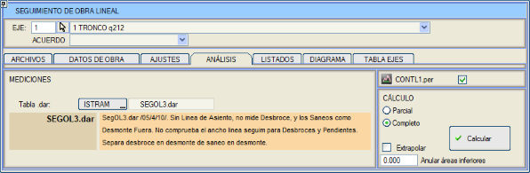
Hacim hesapları (kübaj) bir .dar tablosuna dayanarak yapılır. Kütüphanede birkaç tablo mevcuttur, kullanıcı tarafından özelleştirilebilir. Varsayılan kütüphanede SEGOL1.dar, SEGOL2.dar ve SEGOL3.dar bulunur,
üçüncüsü en kapsamlı olanıdır ve varsayılan olarak kullanılır. SEGOL3.dar ayrıca ilgili BIM modellerinin oluşturulması için hat tipleri, malzemeler ve disiplinler içerir. Farklı bir tablo kullanmak için,
sadece [ISTRAM …] butonuna tıklamak (buton [KULLANICI …] olarak değişir) ve ilgili tabloyu belirtmek yeterlidir.
Enkesitte ölçülen alanları geçersiz kılacak bir değer girmek mümkündür. Bu değer Daha küçük alanları geçersiz kıl alanına girilir.
[Hesapla] butonu, kontrol dosyasını CONTL#.per (# eksen numarasıdır) otomatik olarak değiştirir, geometri raporunda dikkate alınan kontrol noktalarını takip hattı üzerinde işaretler
ve sıfır olmayan alanları hesaplar. Sonraki aşamalarda yeni dosyalar yüklenir ve ilgili metrajları elde etmek için yeniden hesaplama yapılır.
Bu kontrol dosyasının adının yanında CONTL#.per bu dosyayı projeyle ilişkilendirmeye olanak tanıyan bir seçeneğimiz vardır; bu, [Hesapla] ile analiz yapıldığında, projenin geri kalanıyla aynı anda takip BIM modelini oluşturabilmek içindir.
Metrajları elde etmek için hesaplama yapıldığında, her enkesit için L450 ve L59 hatlarının (takip hattı ve oturma yüzeyi sırasıyla) geri dönüş noktaları olup olmadığı kontrol edilir. L450 hattı varsa, ayrıca oturma yüzeyinin varlığı da kontrol edilir.
Ekstrapolasyon yap seçeneği etkinleştirilirse,
bir enkesitin alanı = A ise ve bir sonrakinde takip hattı yoksa (ve dolayısıyla alan = 0), v = dKM · (A+0) / 2 formülüne göre yine de bir kısmi hacim eklenir. Eğer devre dışı bırakılırsa, metrajın takip hattı olan son enkesitte aniden bittiği veya başladığı kabul edilir.
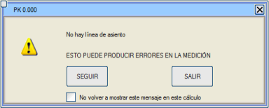Bu düzensizliklerden herhangi biri tespit edilirse, çıkma veya devam etme seçenekleriyle bir uyarı mesajı gösterilir.
Devam etme durumunda, geri kalan enkesitlerin hesaplanması sırasında mesajın tekrar gösterilmemesi olasılığı da etkinleştirilebilir.
Analiz, oturma yüzeyinin güncel olup olmadığını belirlemek için başka bir kontrol yapar (dolgu alanlarında takip hattı oturma yüzeyinin altında olamaz).
Ayrıca, kontrol dosyası üzerinde metrajlar yapılırken, takip hattı içermeyen enkesitler,
bu enkesitte alanı olan kavramlar (bekleyen dolgu, bekleyen yarma,...) hariç, önceki ve/veya sonraki enkesitle kısmi hacimler üretmeyecektir.
Raporlar
Buradan geometri ve metraj raporları görüntülenir.
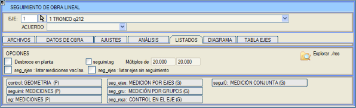
Eğer seguimi,sg kutusu
işaretliyse, seguimi.res ve sg.res raporları burada belirtilen KM katlarında hesaplanacaktır (Raporlar menüsünde düzenlenebilen aliyman ve kurp değerleri ile). Eğer işaretli değilse, tüm enkesitlerde hesaplanacaktır.
Metraj yapılırken sgX.res dosyalarına paralel olarak hesap tabloları için sgX.xslx raporları da oluşturulur.
Geometri Raporu
control.res raporu, her KM için eksene olan mesafe ve kot, ayrıca proje hattına olan yatay veya dikey mesafeye dayalı geometri verileri sağlar.
[control: GEOMETRİ] butonuna tıklandıktan sonra, projenin herhangi bir ekseni için önceden oluşturulmuş raporu seçmeye olanak tanıyan dosya seçici açılır.
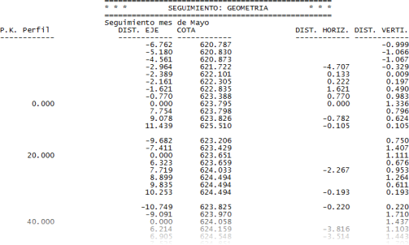
Metraj Raporları
seguimi.res raporu,
hem kesit içinde hem de dışında kalan yüzey ve hacim ölçümleri hakkında veri sağlar. Her ikisi de
kısmi (iki ardışık yapım aşaması arasında), başlangıca göre (sıfır yapım seviyesinden itibaren) ve bekleyen (projeyi tamamlamak için kalan imalat kesimi) olarak ölçülür. Ayrıca, yarma ve dolguya karşılık gelen birikimli bitkisel toprak sıyırma da listelenir.
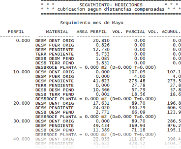
[sg METRAJLAR] butonu, ölçülen tüm kavramların kısmi ve birikimli alan ve hacimlerini içeren sütunlu bir rapor oluşturur (sg.res). Eğer Planda bitkisel toprak sıyırma kutusu işaretlenirse, sg.res raporuna, planda bitkisel toprak sıyırmaları için üç sütun eklenir: Toplam, Yarmada ve Dolguda (m2 cinsinden).
Yukarıdaki butonlardan birine tıklandıktan sonra, projenin herhangi bir ekseni için önceden oluşturulmuş raporu seçmeye olanak tanıyan dosya seçici açılır.
EKSENLERE GÖRE METRAJ (seg_ejes.res) ve GRUPLARA GÖRE METRAJ (seg_gru.res, ayrıca *.xlsx formatında) raporları,
tüm aktif eksenler ve gruplar için metrajları sırasıyla listeler. O eksen için beyan edilen son açıklama da gösterilir. Aslında, bu açıklama İMALAT VERİLERİ'nden değiştirilirse, bir geçmiş kayıt oluşturmaya gerek kalmadan sonraki oturumlar için kaydedilmiş olur. Eğer [ ]seg_ejes: takibi olmayan eksenleri listele kutusu işaretlenirse, takibi olmasa bile tüm eksenler rapora dahil edilir.
BİRLEŞİK METRAJ raporu (segui0.res) tüm seguil.res, segui2.res... raporlarını ve birleşik toplam hacimlerin bir özetini tek bir raporda içerir.
Kırmızı Kot Raporu
[seg_roja: EKSENDE KONTROL] butonu,
eksende geometrik bir kontrol yapılmasına olanak tanıyan bir rapor oluşturur, çünkü her KM'de proje kotunu, takip kotunu ve ikisi arasındaki farkı yazdırır:
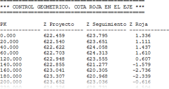
Diyagram
Bu sekmeden, farklı ara durumların farklı renklerle gösterilmesi yoluyla imalatın durumunu görselleştirmek mümkündür. Diyagramda gezinmek için, diyagramın alt kısmındaki KM kaydırıcısı kullanılabilir veya fare ana butonu basılı tutularak diyagram üzerinde sürüklenebilir.
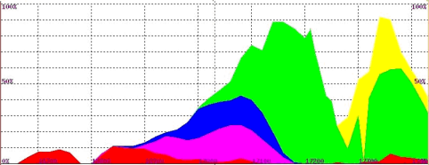
Bir veya daha fazla takibi analiz edip kontrol dosyasını oluşturduğunuzda, programın Seguimi.gui takip bilgi bandı ile bunların boykesitini çizebilmeniz gerekir.
Eksen Tablosu
Bu sekme, her eksene bağlı geçmiş kayıt listeleri oluşturmaya olanak tanır.
Bu listeler, listedeki tüm geçmiş kayıtların tek seferde kopyalanması şeklinde uygulanabilir.
Kesişim ve Dönel Kavşak Kolu Eksenleri
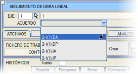Bu modülden, kesişim ve dönel kavşaklı bağlantıların kollarının eksenlerinin bireysel takibi de yapılabilir.
Kavşak kolları ile çalışma şekli, geleneksel bir ekseninkiyle benzerdir. Tek fark, takibi yapılacak olan kavşak kolunun menünün üst kısmından seçilmesi gerektiğidir.
|